Salesforce
Salesforce is a best-of-breed cloud customer relationship management app, enabling organizations to easily manage and track leads, contacts and opportunities. It is built on the Force.com platform, and can be readily extended with an expansive range of third-party marketplace apps and other Salesforce products that encompasses sales, marketing, customer service and commerce.
API version
The Salesforce connector uses Salesforce REST API.
Supported editions and versions
The Salesforce connector works with all Salesforce cloud instances. It also works with Force.com apps.
How to connect to Salesforce on Workato
The Salesforce connector uses OAuth2 authentication to authenticate with Salesforce.
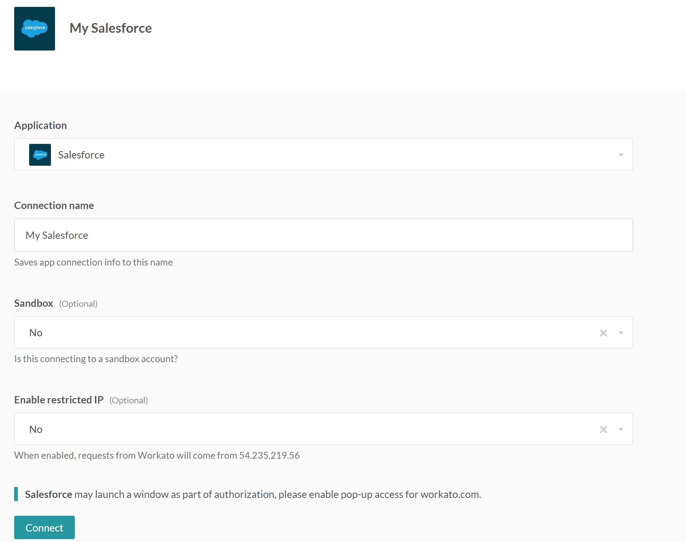 Configured Salesforce connection
- Connection name
Give this Salesforce connection a unique name that identifies which Salesforce instance it is connected to.
- Sandbox
To connect to a Salesforce Sandbox instance, simply use the login credentials for your sandbox account and select "yes" on this field.
- Enable restricted IP
Relevant for organizations with IP whitelisting. Select yes to have all requests from Workato originate from a consistent, known IP address.
Once you have filled up the above fields, click on connect a Salesforce connection pop-up will show up, allowing you to either chose an account that has been saved in your browser, or provide new login credentials. 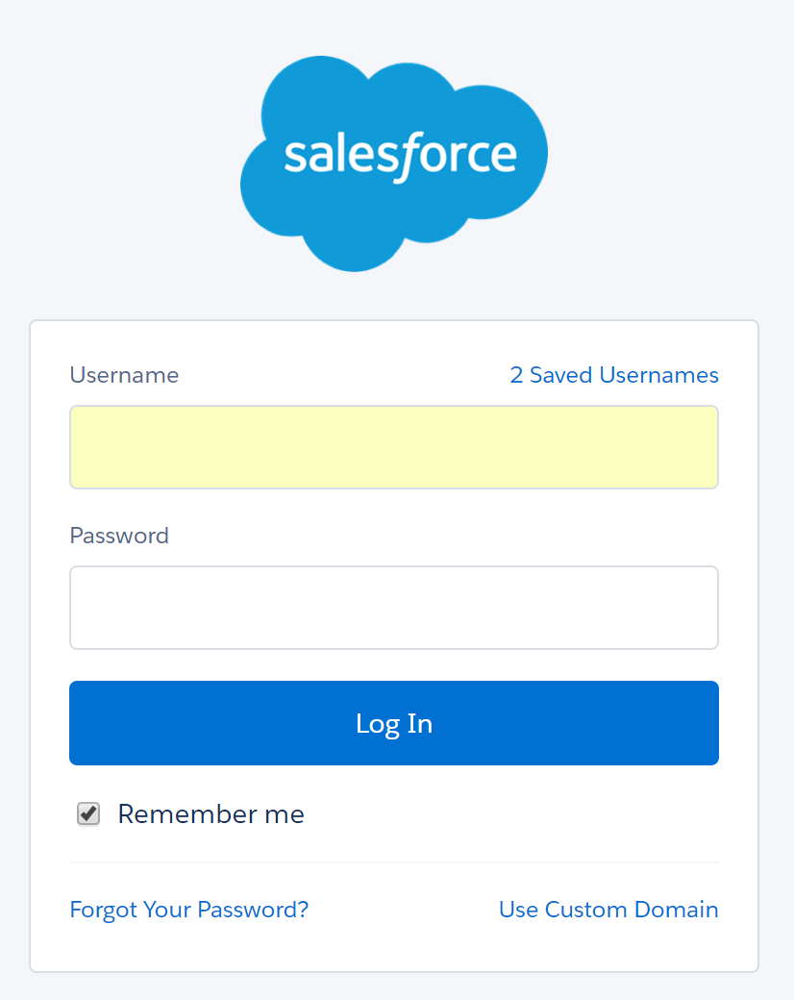
- Username
Username to connect to Salesforce.
- Password
Password to connect to Salesforce.
Roles and permissions required to connect
Salesforce users who can login to Salesforce can connect to Salesforce from Workato. The user will have the same permissions on Workato as in Salesforce, and will be able to read and write to the same projects and issues.
Working with the Salesforce connector
Can I connect more than one Salesforce account in a single recipe?
Yes, you may use up to 2. Simply use the Salesforce Secondary app on Workato, and you will be able to use both accounts in a single recipe. Find out more here.
Using real-time triggers
Workato offers real-time capabilities for 2 Salesforce triggers, namely New Object and New/Updated Object. This allows Workato to pick up any object that was created/updated in Salesforce immediately. To enable this,
- Log in to your Salesforce instance and click on 'Setup' at the top right of the page.
- On the left hand panel, under Build, click on Create > Workflow & Approvals > Workflow rules.
- Select the Object which you want to receive real time updates for and click Next.
Fill in the required and optional field: Rule name, Rule Criteria (Rule criteria can be set based on your preference. For example, only when Opportunity status equals “Closed Won".) After you are done, click Save & Next.
Select New Outbound Message under Specify workflow actions and fill in the required and optional fields.
- You are now set up for real-time integration! Simply go to your Workato recipe and choose real-time trigger. Note that you can only use these triggers with objects you have set up the above steps with.
Salesforce real-time triggers is enabled only for certain plans. Check the Pricing and Plans page or reach out to Workato sales representatives at +1 (844) 469-6752 to find out more.
Working with generic triggers in Salesforce
In Workato, a Trigger refers to a condition that is set to start off a recipe. All the triggers on the Salesforce connector deals with Objects. The name of the trigger tells you exactly what event must occur for a recipe to take place. The term "object" is exactly the same as how it is used within Salesforce itself, and refers to things such as leads, opportunities, accounts, as well as custom objects you may have created for your organisation. Simply click on the Object field's dropdown list and you will be able to see all the objects associated with the instance of Salesforce you have connected to a recipe. For example, you use the trigger "New Object" and select Lead as the object. Your recipe will trigger every time a new lead is created.
Working with generic create/update/search actions in Salesforce
When working with Salesforce Actions on Workato, you should find it extremely easy if you are familliar with the fields in the objects on your Salesforce account. When you select an object to use in a create/update/search action, you will see all the fields associated with that object appearing in your action. For example, if you were to choose Lead you will see fields like phone, email, lead status etc. Simply drag and drop pills into the associated fields you want to populate in a create/update action, or for the field you want to search with in the search action.
Working with attachments in Salesforce
Uploading
To upload an attachment to Salesforce using Workato, you can use the Create Object Action, and select Attachment under the Object field. Before that however, you need to have a step that downloads the file that is to be uploaded to Salesforce. You may use the Box action get file download URL, followed by using the utilities tool to upload it from the obtained URL, or a simillar flow of actions with another connector. You can check out this example here on how to download a file to Workato.
Downloading
To download an attachment from Salesforce, you can use the Download file Action. The file ID must be obtained from a previous step, usually from the Get object details step. Once that step is properly set up, you will be able to use the attachment as a pill in the other steps of the recipe, for example, you can use the Upload file action in the Box connector.
Working with SOQL in Salesforce
Salesforce Object Query Language (SOQL) is used to search your Salesforce data for specific information. SOQL syntax consists of a required SELECT statement which may be followed by a number of optional clauses (such as TYPEOF, WHERE, WITH, GROUP BY, etc.).
In a Workato recipe, the scheduled object query trigger will run SOQL queries with the following basic syntax: SELECT (list of fields) FROM (an object) WHERE (filter statements/sorting).
The recipe will automatically handle the SELECT FROM portion of your query. It will SELECT all fields FROM the object you choose from the pick list. For optional clauses, the trigger currently only supports WHERE conditions.
For a list of standard fields for major Salesforce objects, see: Salesforce Fields Reference.
Inputting SOQL WHERE Conditions (Syntax):
The WHERE clause follows field expression syntax. A fieldExpression is defined as follows: \
Comparison operators: Comparison operators include the following: =, !=, <, <=, >, >=, LIKE, IN, NOT IN, INCLUDES, and EXCLUDES. Here is a simple example following fieldExpression syntax:
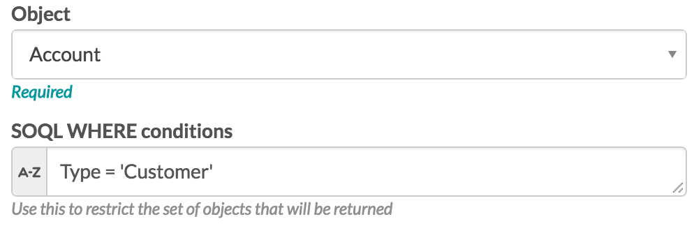
For detailed information on how to use each comparison operator, see: Comparison Operators.
Logical operators: Multiple field expressions can be joined using logical operators. These include: AND, OR, and NOT. The basic syntax is as follows:
- fieldExpressionX AND fieldExpressionY
- fieldExpressionX OR fieldExpressionY
- NOT fieldExpressionX.
Here is an example showing two fieldExpressions joined by a logical operator:
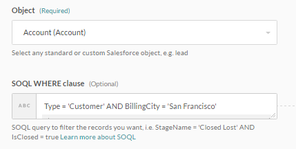
For more information on logical operators, see: Logical Operators.
Date Formats and Date Literals:
To filter on date fields in a query, you must use Date only format. The syntax for this is: YYYY-MM-DD. To filter on dateTime fields in a query, you must use the format including: date, time, and time zone offset. There are three possible syntax formats for this:
- YYYY-MM-DDThh:mm:ss+hh:mm
- YYYY-MM-DDThh:mm:ss-hh:mm
- YYYY-MM-DDThh:mm:ssZ.
In order to query a date or dateTime field, you may need to turn on formula mode if you are not using it already. This is needed to convert your timestamp to the ISO8601 format expected in SOQL. Also note that you do not need to use single quotes around date or dateTime values. For date fields, add ‘.to_date’ to the end of your date formula to convert your date or timestamp to the correct format.
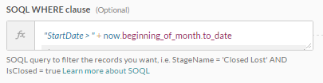
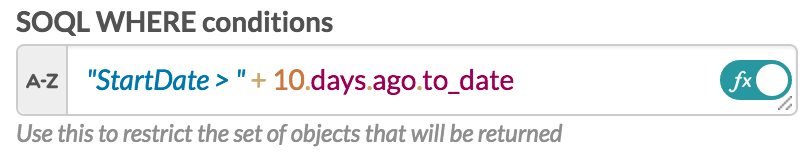
For dateTime fields, the third syntax format is the simplest to use. After entering the formula to get your desired timestamp (eg: now, 2.weeks.ago.beginning_of_day, etc.), add ‘.strftime("%Y-%m-%dT%H:%M:%S%z")’ to the end of it.

For more information on date formats and date literals, see: Date Formats and Date Literals
For additional help, see Salesforce documentation
Prevent schema errors with Fields list
When using a Salesforce trigger/action in a recipe, all object fields (standard and custom fields) are requested from Salesforce by default, even if these fields are not used in the recipe.
If a Salesforce admin changes the Salesforce object schema, e.g. deletes fields in the object, the recipe throws an error when making API requests to Salesforce for that object. This is because these deleted fields are still being requested from Salesforce by the recipe, which is an invalid request. On the other hand, if fields are added to the Salesforce object, there will not be any recipe errors as Workato will simply not request for these additional fields.
Such schema differences between Salesforce and Workato can be resolved by a schema refresh. However, if frequent schema changes are expected, we can utilize the Fields input field to control the fields that we request from Salesforce. This will ensure that schema changes unrelated to the recipe will not cause the recipe to break or experience errors.
Fields list
The Fields list input field allows users to select the fields they wish to use in the recipe. This ensures that the recipe will be affected only by changes to these subset of fields, and therefore minimize impact on the recipe due to schema changes.
The benefits of using the Fields list are:
- Improved recipe performance
- Improved recipe usability due to smaller datatree with only relevant datapills
- Minimizes impact on recipe by Salesforce object schema changes
How to use Fields list
Salesforce triggers and actions have an optional input field called Fields. This is a multiselect field for you to select the data fields you want to use in the recipe. If left blank, the Salesforce trigger/action will retrieve all data fields in the datatree by default.
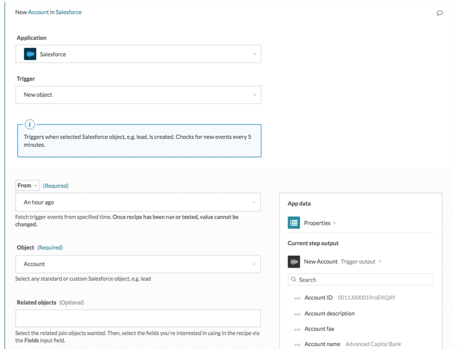 Unconfigured fields selector. All account data fields are retrieved in the datatree by default.
All data fields of your selected object will be available in the Fields list.
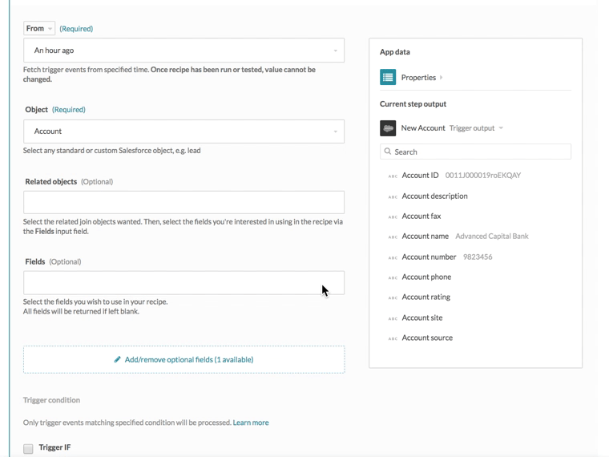 Fields selector displays all available data fields for your selected object by default
By selecting any subset of these fields, the datatree will be regenerated to display only the selected datapills.
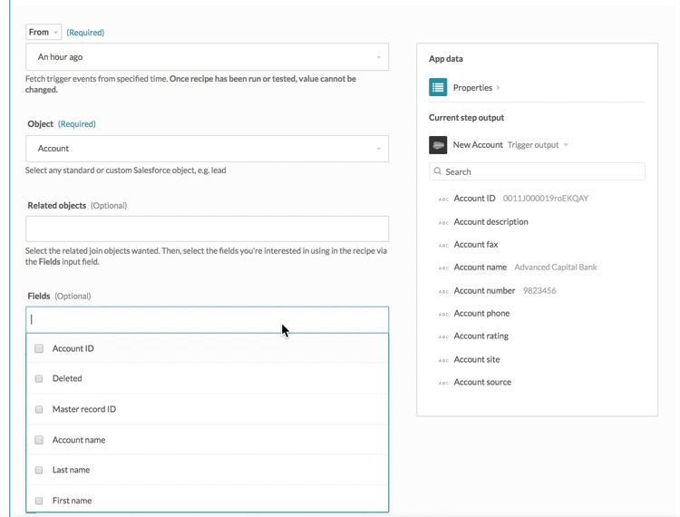 Configuring the fields selector - the datatree is regenerated when any fields are selected
In Salesforce, you can choose to retrieve related objects' data as well, e.g. if your trigger is a new opportunity in Salesforce, we can retrieve data about the Salesforce account the opportunity is related to. If your trigger is a new case, we can retrieve data about the Salesforce contact, lead or account the opportunity is related to. To tell Workato the fields to select, first select the related objects you're interested in, then select the fields of this related obect you're interested in.
In the following example, we first selected account as the primary base object, then parent account as the join object. The Fields multiselect list is promptly populated with fields belonging to the parent account as well. Similarly, if the Fields list is not configured, all account and parent accountfields will be fetched from Salesforce.
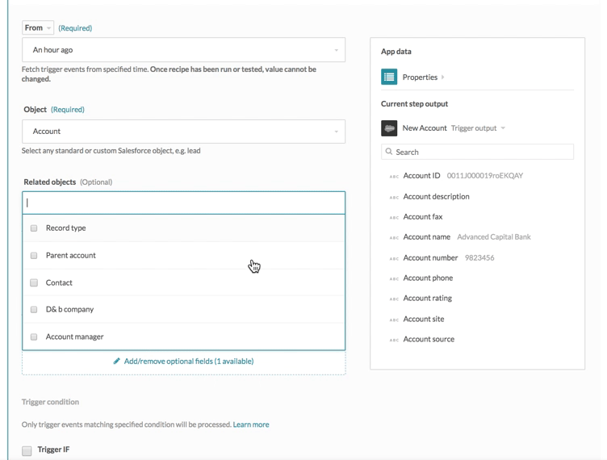 Available join object fields will be shown when the related join objects is selected
All data fields of your selected base and related join objects will be available in the Fields list. By selecting any subset of these fields, the datatree will be regenerated to display only the selected datapills.
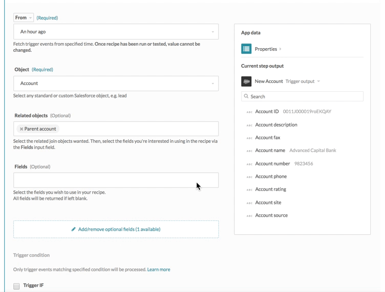 Configuring the fields selector containing base and related join object data fields - the datatree is regenerated when any fields are selected
By limiting the datatree to only the fields we're interested in using, we mitigate the effects of Salesforce schema changes on our recipe.
Best practices
When starting to use Workato with your Salesforce account, we reccomend that you either do it on a sandbox account, or test on non-essential pieces of data. This would prevent any loss of crucial data, especially since actions performed through Workato cannot be undone.
Working with sandboxes on Workato
Salesforce sandboxes are isolated from your Salesforce production organization, so operations that you perform in your sandboxes don’t affect your Salesforce production organization, and conversely. Sandboxes are nearly identical to your Salesforce production organization. For a list of differences, see Sandbox Setup Tips and Considerations.
Troubleshooting
Here is a list of common errors that you may encounter, and links to how to rectify them.